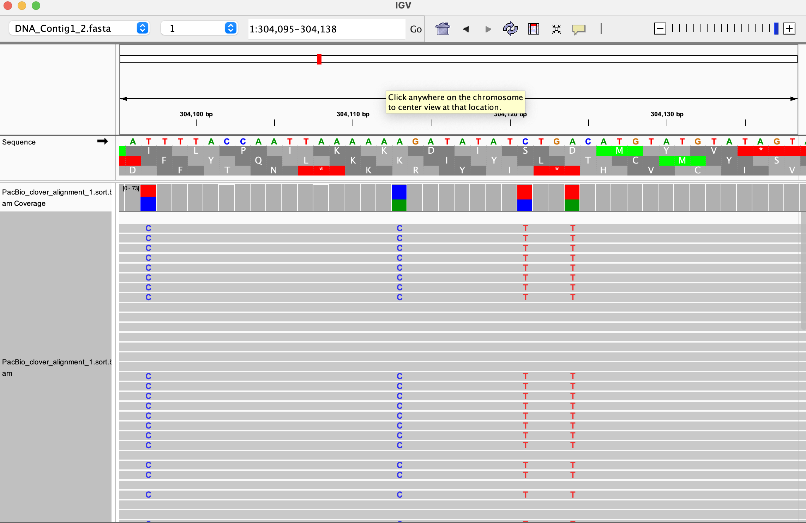

%%bash
#run fastqc
mkdir -p results/fastqc_output
fastqc -q -o results/fastqc_output ../Data/Clover_Data/*.fastq > /dev/null 2>&1
Tutorial description
This tutorial will cover the steps for performing the alignment of raw RNA- and HiFi-sequencing data. You will need to use the software IGV on your computer to visualize some of the output files, which can be easily downloaded once they are produced. At the end of this tutorial you will be able to:
- perform and discuss quality control on raw data in
fastqformat usingFastQCandMultiQC - align HiFi and RNA sequencing data with dedicated tools such as
MiniMap2andSTAR - analyze the quality the alignment with
qualimap
The output of this notebook will be used for the Variant calling analysis and the bulk RNA-sequencing analysis. If you do not want to run this notebook, you can alternatively use the free interactive tool Galaxy to perform the alignment steps. We have uploaded the data on Galaxy, and the manual to perform the exercise is found at the course webpage.
The present tutorial, like the rest of the course material, is available at our open-source github repository.
A few introductory points to run this notebook (click to show)
- To use this notebook, use the
NGS (python)kernel that contains the packages. Choose it by selectingKernel -> Change Kernelin the menu on top of the window.

- In this notebook you will use only bash commands as you would do in the command line (this is why you read
%%bashat the beginning of each piece of code). Those commands can be replicated in the command line, but we thought of integrating them in a notebook to make the tutorial understandable. The bash commands can also be marked with an!sign at the beginning of the line - On some computers, you might see the result of the commands once they are done running. This means you will wait some time while the computer is crunching, and only afterwards you will see the result of the command you have executed
- You can run the code in each cell by clicking on the run cell button, or by pressing Shift + Enter . When the code is done running, a small green check sign will appear on the left side
- You need to run the cells in sequential order, please do not run a cell until the one above finished running and do not skip any cells
- Each cell contains a short description of the code and the output you should get. Please try not to focus on understanding the code for each command in too much detail, but rather try to focus on the output
- You can create new code cells by pressing + in the Menu bar above.
Biological background
White clover (Trifolium repens) is an allotetraploid. It is a relatively young, outcrossing species, which originated during the most recent glaciation around 20,000 years ago by hybridisation of two diploid species, T. occidentale and T. pallescens (see figure below).
This means that it contains genomes originating from two different species within the same nucleus. Normally, white clover is an outbreeding species, but a self-compatible line was used for sequencing the white clover genome (Griffiths et al, 2019). This line will be designated as S10 in the data, indicating that this is the 10th self-fertilized generation. In addition, we have data from a wild clover accession (ecotype) called Tienshan (Ti), which is collected from the Chinese mountains and is adapted to alpine conditions.
We will perform alignment of the data to the white clover’s reference genome containing both T. occidentale and T. pallescens (called contig 1 and contig 2 in the data). We will also perform alignment to each subgenome, and see which are the differences with the quality control tools.
Quality control and mapping
Quality Control
We run FastQC on the PacBio Hifi reads and on two of the Illumina RNA-seq libraries. FastQC does quality control of the raw sequence data, providing an overview of the data which can help identify if there are any problems that should be addressed before further analysis. You can find the report for each file into the folder results/fastqc_output/. The output is in HTML format and can be opened in any browser or in jupyterlab. It is however not easy to compare the various libraries by opening separate reports. To aggregate all the results, we apply the MultiQC software to the reports’ folder. The output of MultiQC is in the directory results/multiqc_output/fastqc_data.
Note: fastqc prints a lot of output conisting of a simple confirmation of execution without error, even when using the option -q, which means quiet. Therefore we added > /dev/null 2>&1 to the command to mute the printing of that output.
%%bash
#run multiqc
multiqc --outdir results/multiqc_output/fastqc_data results/fastqc_output
Questions
Visualize the Webpage generated by MultiQC.
Hint: You can find a Help button that offers additional information about the plots for each panel. Focus on the following panels: “Per base sequence quality”, “Per sequence quality scores”…. (“Per base sequence content” always gives a FAIL for RNA-seq data).
- What do you notice with respect to the sequence quality scores?
- Are there any other quality issues worth noting?
Hifi data mapping
We map the PacBio Hifi reads (Hifi_reads_white_clover.fastq) to the white clover reference sequence (Contig1&2) using minimap2. We run two mapping rounds, using two different preset options (-x in the command) for the technology: * PacBio/Oxford Nanopore read to reference mapping: map-pb * Long assembly to reference mapping. Divergence is below 20%” settings asm20. Next, we create reports of the mapping results by running QualiMap on the two obtained SAM files.
We first need to index the reference fasta files using samtools faidx. This produces files in .fai format containing informations about length of the reference sequence, offset for the quality scores, name of the reference sequence. Click here for a detailed overview.
%%bash
#copy the reference data in the folder reference_data, so that you can write the indexing files
mkdir -p reference_data
cp ../Data/Clover_Data/DNA_Contig1_2.fasta ../Data/Clover_Data/DNA_Contig1.fasta ../Data/Clover_Data/DNA_Contig2.fasta reference_data%%bash
samtools faidx reference_data/DNA_Contig1_2.fasta
samtools faidx reference_data/DNA_Contig1.fasta
samtools faidx reference_data/DNA_Contig2.fastawe create an output folder for the HIFI alignment, and run minimap2 with the settings explained before.
%%bash
mkdir -p results/HIFI_alignment/
minimap2 -a -x map-pb -o results/HIFI_alignment/PacBio_clover_alignment_1_2_mappb.sam \
reference_data/DNA_Contig1_2.fasta \
../Data/Clover_Data/Hifi_reads_white_clover.fastq
minimap2 -a -x asm20 -o results/HIFI_alignment/PacBio_clover_alignment_1_2_asm20.sam \
reference_data/DNA_Contig1_2.fasta \
../Data/Clover_Data/Hifi_reads_white_clover.fastqsamtools sort is used to sort the alignment with left-to-right coordinates. The output is in .bam format, with .sam files in input (Note that you could have gotten .bam files from minimap2 with a specific option).
%%bash
samtools sort results/HIFI_alignment/PacBio_clover_alignment_1_2_mappb.sam \
-o results/HIFI_alignment/PacBio_clover_alignment_1_2_mappb.sort.bam
samtools sort results/HIFI_alignment/PacBio_clover_alignment_1_2_asm20.sam \
-o results/HIFI_alignment/PacBio_clover_alignment_1_2_asm20.sort.bamsamtools index creates the index for the bam file, stored in .bai format. The index file lets programs access any position into the aligned data without reading the whole file, which would take too much time.
%%bash
samtools index results/HIFI_alignment/PacBio_clover_alignment_1_2_mappb.sort.bam
samtools index results/HIFI_alignment/PacBio_clover_alignment_1_2_asm20.sort.bamRun quality control on both files
%%bash
qualimap bamqc -bam results/HIFI_alignment/PacBio_clover_alignment_1_2_mappb.sort.bam \
-outdir results/qualimap_output/PacBio_clover_alignment_1_2_mappb
qualimap bamqc -bam results/HIFI_alignment/PacBio_clover_alignment_1_2_asm20.sort.bam \
-outdir results/qualimap_output/PacBio_clover_alignment_1_2_asm20For easier comparison, we can again collapse the two reports into a single one using MultiQC, in the same way we did for putting together the other reports from fastQC.
%%bash
#run multiqc
multiqc --outdir results/qualimap_output results/qualimap_outputNow you can visualize the report generated, which is in results/qualimap_output/multiqc_report.html.
Next, we map the white clover PacBio Hifi reads to contig1 and contig2 separately, using the setting you selected at the previous step (let’s say map-pb was chosen, but you are free to change this setting in the commands). As the two contigs represent the two white clover subgenomes, this mapping will allow you to see the two subgenome haplotypes and call subgenome SNPs.
%%bash
minimap2 -a -x map-pb -o results/HIFI_alignment/PacBio_clover_alignment_1.sam \
reference_data/DNA_Contig1.fasta \
../Data/Clover_Data/Hifi_reads_white_clover.fastq%%bash
minimap2 -a -x map-pb -o results/HIFI_alignment/PacBio_clover_alignment_2.sam \
reference_data/DNA_Contig2.fasta \
../Data/Clover_Data/Hifi_reads_white_clover.fastqSort the bam files and create their index using samtools
%%bash
samtools sort results/HIFI_alignment/PacBio_clover_alignment_1.sam -o results/HIFI_alignment/PacBio_clover_alignment_1.sort.bam
samtools sort results/HIFI_alignment/PacBio_clover_alignment_2.sam -o results/HIFI_alignment/PacBio_clover_alignment_2.sort.bam%%bash
samtools index results/HIFI_alignment/PacBio_clover_alignment_1.sort.bam
samtools index results/HIFI_alignment/PacBio_clover_alignment_2.sort.bamPerform quality control
%%bash
mkdir -p results/qualimap_output
qualimap bamqc -bam results/HIFI_alignment/PacBio_clover_alignment_1.sort.bam -outdir results/qualimap_output/PacBio_clover_alignment_1%%bash
qualimap bamqc -bam results/HIFI_alignment/PacBio_clover_alignment_2.sort.bam -outdir results/qualimap_output/PacBio_clover_alignment_2%%bash
#run multiqc
multiqc --outdir results/qualimap_output results/qualimap_output
Task: IGV visualization and Questions
Now you can inspect the alignment files in IGV.
First, you will need to download the reference fasta sequence in
../Data/Clover_Data/DNA_Contig1_2.fastaand import it into IGV. You can do the same for the filesDNA_Contig1.fastaandDNA_Contig2.fastathat you might need later. In IGV, this is done with the menuGenomes --> Load Genome from filemenu and by selecting the relevant fasta file. Then, choose the reference you need from the drop-down menu (see figure below). You will not yet see much, but you can choose one of the two subgenomes (contig 1 or 2) and double click on a chromosome position to inspect the reference sequence. The next step will visualize the mapped files on IGV.
You will not yet see much, but you can choose one of the two subgenomes (contig 1 or 2) and double click on a chromosome position to inspect the reference sequence. The next step will visualize the mapped files on IGV.Each mapped genome can be seen in IGV against the reference file of choice. To load an aligned file, first download it together with the index file in
.baiformat. For example, you need to download bothresults/HIFI_alignment/PacBio_clover_alignment_1.sort.bamandresults/HIFI_alignment/PacBio_clover_alignment_1.sort.bam.baito see this alignment (you need to open only the.bamfile with IGV). If you open more files, their alignments will be distributed in the IGV interface, and you can change the size of each visualization yourself (below shown with only one opened alignment). 
Now compare in IGV the two bam files PacBio_clover_alignment_1.sort.bam and PacBio_clover_alignment_2.sort.bam.
- What do you observe when comparing the two BAM files?
- Have a look at the polymorphic regions in IGV. Are they true polymorphisms?
Add to the visualization the third alignment PacBio_clover_alignment_1_2_mappb.sort.bam in IGV.
- Why do you see fluctuations in coverage and large regions without any apparent subgenome SNPs?
- What are the major differences between the stats for the reads mapped to Contigs1&2 versus contig1 and contig2? What is your interpretation of the differences?
RNA-seq mapping
In the ../Data folder you will find 24 RNA-seq libraries, 12 S10 libraries and 12 Tienshan libraries. Each library is paired-end, which is denoted by R1 and R2 at the end of two files having the same name, such as S10_1_1.R1.fastq and S10_1_1.R2.fastq. We will align each library separately and then merge the alignments to create two final samples for S10 and Tienshan.
First, we need to create a genome file for the reference fasta file of contigs 1 and 2. This is done with STAR, using the option --runMode genomeGenerate. We also need to convert the gene annotation from gff to gtf format with gffread to allow counting gene transcripts. STAR is a very complex tool with many options, so it is always useful to have a reference manual.
%%bash
gffread -T -o reference_data/white_clover_genes.gtf ../Data/Clover_Data/white_clover_genes.gff%%bash
STAR --runThreadN 8 \
--runMode genomeGenerate \
--genomeDir results/STAR_output/indexing_contigs_1_2 \
--genomeFastaFiles reference_data/DNA_Contig1_2.fasta \
--sjdbGTFfile reference_data/white_clover_genes.gtf We got a warning saying
!!!!! WARNING: --genomeSAindexNbases 14 is too large for the genome size=2089554, which may cause seg-fault at the mapping step. Re-run genome generation with recommended --genomeSAindexNbases 9meaning we need shorter strings of bases (9 bases instead of 14) to be indexed, as our reference genome is very short, and too long strings would cause many alignment errors. So we rerun the command with the suggested option.
%%bash
STAR --runThreadN 8 \
--runMode genomeGenerate \
--genomeDir results/STAR_output/indexing_contigs_1_2 \
--genomeFastaFiles reference_data/DNA_Contig1_2.fasta \
--sjdbGTFfile reference_data/white_clover_genes.gtf \
--genomeSAindexNbases 9We use again STAR to align every single library for S10. We extract the library name of each file and run STAR through each pair of files. Note that plant introns are very rarely more than 5000 bp and that you are mapping to two homoeologous contigs that show high similarity, especially in genic regions. We set the maximum size to 5000 using --alignIntronMax 5000.
%%bash
for i in `ls ../Data/Clover_Data/S10*.R1.fastq`
do
PREFIXNAME=`basename $i .R1.fastq`
echo "###############################################"
echo "##### ALIGNING PAIRED-END READS "$PREFIXNAME
echo "###############################################"
STAR --genomeDir results/STAR_output/indexing_contigs_1_2/ \
--runThreadN 8 \
--runMode alignReads \
--readFilesIn ../Data/Clover_Data/$PREFIXNAME.R1.fastq ../Data/Clover_Data/$PREFIXNAME.R2.fastq \
--outFileNamePrefix results/STAR_output/S10_align_contigs_1_2/$PREFIXNAME \
--outSAMtype BAM SortedByCoordinate \
--outSAMattributes Standard \
--quantMode GeneCounts \
--alignIntronMax 5000
doneDo the same alignment for Tienshan libraries
%%bash
for i in `ls ../Data/Clover_Data/TI*.R1.fastq`
do
PREFIXNAME=`basename $i .R1.fastq`
echo "###############################################"
echo "##### ALIGNING PAIRED-END READS "$PREFIXNAME
echo "###############################################"
STAR --genomeDir results/STAR_output/indexing_contigs_1_2/ \
--runThreadN 8 \
--readFilesIn ../Data/Clover_Data/$PREFIXNAME.R1.fastq ../Data/Clover_Data/$PREFIXNAME.R2.fastq \
--outFileNamePrefix results/STAR_output/TI_align_contigs_1_2/$PREFIXNAME \
--outSAMtype BAM SortedByCoordinate \
--outSAMattributes Standard \
--quantMode GeneCounts \
--alignIntronMax 5000
doneRun quality control on each aligned library with MultiQC. In this way there will be a whole report to compare S10 files and Tienshan files.
%%bash
multiqc --outdir results/multiqc_output/TI_STAR_align_1_2 \
results/STAR_output/TI_align_contigs_1_2/%%bash
multiqc --outdir results/multiqc_output/S10_STAR_align_1_2 \
results/STAR_output/S10_align_contigs_1_2/We merge the outputs of each group of aligned libraries. Here is how the files look like for the Tienshan.
!ls -lh results/STAR_output/TI_align_contigs_1_2/TI_*.sortedByCoord.out.bam Apply samtools merge
%%bash
mkdir -p results/STAR_output/TI_align_contigs_1_2_merge/
samtools merge -f results/STAR_output/TI_align_contigs_1_2_merge/TI.sorted.bam results/STAR_output/TI_align_contigs_1_2/TI_*.sortedByCoord.out.bam %%bash
mkdir -p results/STAR_output/S10_align_contigs_1_2_merge/
samtools merge -f results/STAR_output/S10_align_contigs_1_2_merge/S10.sorted.bam results/STAR_output/S10_align_contigs_1_2/S10_*.sortedByCoord.out.bam Index both merging outputs. A file in format bam.bai will appear in their respective folders.
%%bash
samtools index results/STAR_output/S10_align_contigs_1_2_merge/S10.sorted.bam%%bash
samtools index results/STAR_output/TI_align_contigs_1_2_merge/TI.sorted.bam
Wrapping up
In this exercise, you learnt to align various types of data after performing quality control for raw data. We looked at some of the options for the aligners and at how to use some of the basic samtools manipulation programs. The outputs from the RNA alignments will be used for the VCF file analysis in the next notebook, and the RNA alignments will be use for the bulk RNA data analysis.